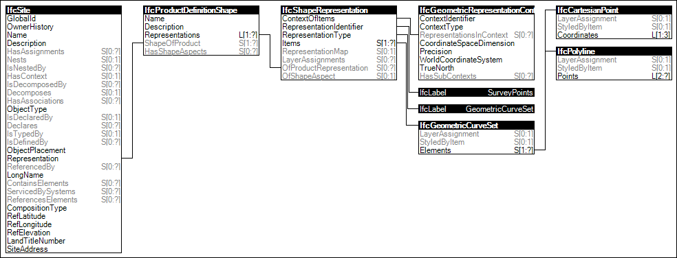

Link to this page
Link to this pageElements may provide a 'SurveyPoints' representation for defining a contour such as for IfcSite. It contains the survey points as a set of Cartesian points and optionally breaklines.
The representation identifier and type and the only allowed single representation item of the 'SurveyPoints' representation are:
Figure 53 illustrates an instance diagram.
 |
Figure 53 — Survey Points Geometry |